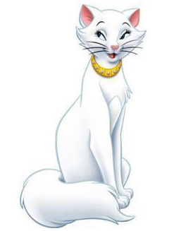
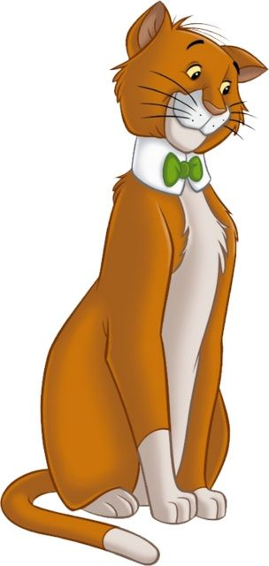
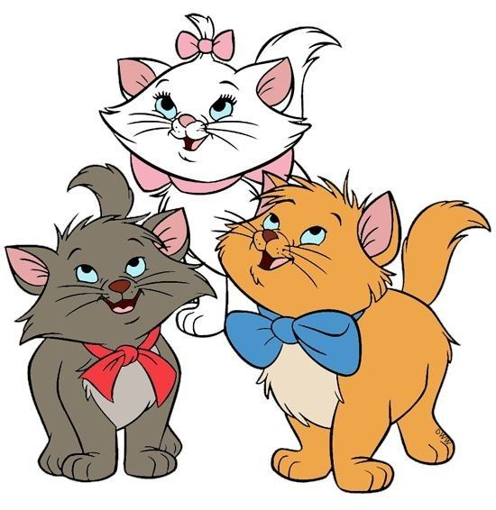
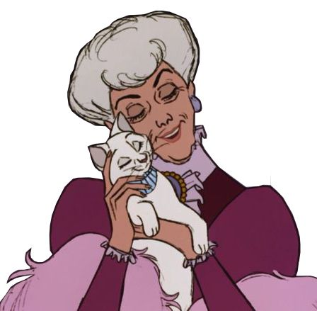

Personajes Principales
Duquesa
Duquesa es una sofisticada gata, madre de Marie, Berlioz y Toulouse.

Thomas O'Malley
El encantador y muy inteligente gato callejero .

Marie, Berlioz, y Toulouse
Los adorables y traviesos gatitos.

Madame Adelaide Bonfamille
Es la dueña de Duquesa y sus hijos.

Edgar
Edgar es el villano principal de la película "Los Aristogatos".